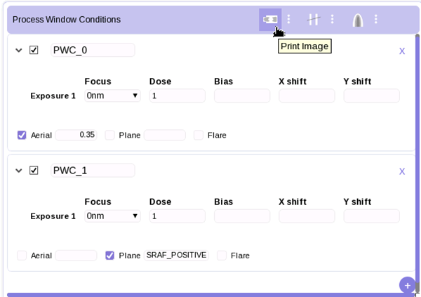
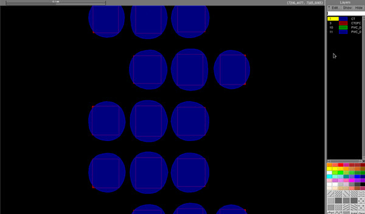

The Print Image (PI) tool performs optical
and resist simulations to generate image contours for a design file.
Prerequisites
A layout
open in Calibre WORKbench.
An open Calibre
RFT v2.0 LM or Sparse simulation session.
At least one
properly-configured Process Window Condition (PWC), as described
in “Adding Process Window Conditions”.
Procedure
- View and
modify print image parameters in the Process Window Conditions area.
Click the print image options icon.
Start At —
Defines the starting layer number of the generated output layers.
Each additional PWC you define is added to the next sequential layer.
Note: Choosing a Start At parameter that matches
an existing layer causes the RET Flow Tool simulation to silently
overwrite the layer. Ensure that you set Start At in such a way
that you will not lose information.
Replace or Append —
The Replace option clears the layer’s previous
contents before running the simulation. This is the default.
The Append option keeps an existing layer’s
contents, adding new simulation results to the layer.
MTFlex —
Opens a flyout panel to specify a remote host or remote file for
use with Calibre MTFlex. This option is only available in Litho
Model session PI simulations.
- Ensure
that the area of interest is showing or selected in the Calibre
WORKbench layout display. Calibre WORKbench simulates the entire
viewing window if nothing is selected, or simulates the interior
of a selection box.
- Run the
simulation by clicking the Print Image icon.
Figure 2. Run
the PI Simulation
Results
View the results of the print image simulation in the main Calibre
WORKbench window. Contours represent the litho conditions that you
specified.
Figure 3. Example
PI Output Contour
If no results appear, try the following solutions:
Check to
see if the correct design layer has been selected. The layer selected
should be the simulation layer.
Check your
background and layer transmission settings for the mask.
If you are
using Aerial image mode for a PWC, try changing the Aerial image
threshold value.